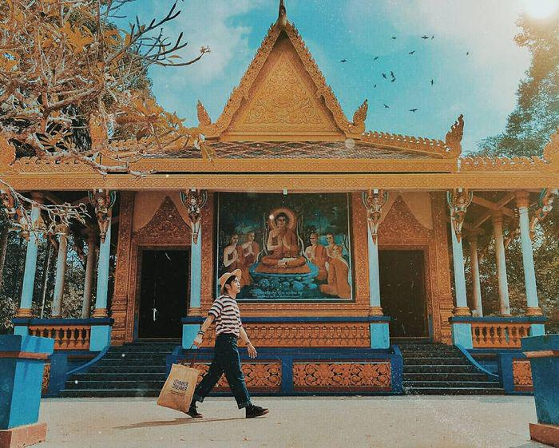
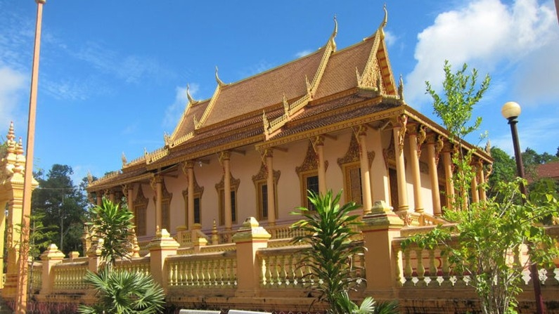

Trải Nghiệm Địa Phương
Đi Bụi Cùng Cheap
Du Lịch Sóc Trăng thú vị chắc chắn phải ghé thăm
Việc được trải nghiệm nhiều nền văn hoá khác nhau trên thế giới là sở thích tuyệt vời rất nhiều du
khách mong muốn. Nếu bạn cũng như vậy thì ngại gì mà không xách balo lên và đi tới các địa điểm du
lịch Sóc Trăng.
Sóc Trăng nằm ở ven vùng sông Cửu Long, ngay cửa sông Hậu và hội đủ nhiều nét văn hoá đặc sắc từ các
dân tộc Hoa - Khmer - Kinh. Hãy thử một lần du lịch Sóc Trăng, bạn sẽ có nhiều khoảnh khắc đáng nhớ
đấy!
1. Chợ nổi Ngã Năm
Nếu đến Vĩnh Long trên tuyến Quốc lộ 1A, bạn chắc chắn sẽ có cơ hội tham quan cầu Mỹ Thuận. Vào thời điểm khánh thành vào năm 2000 thì đây là cây cầu dây văng đầu tiên tại Việt Nam, được xây dựng với sự viện trợ của chính phủ Úc.
2. Chùa Dơi - nét kiến trúc cổ xưa
Chùa Dơi là địa điểm du lịch Sóc Trăng nổi tiếng tọa lạc tại đường Lê Hồng Phong, Phường 3, TP.Sóc Trăng. Kiến trúc của ngôi chùa này được xem là tiêu biểu của Phật giáo Nam tông Khmer, chùa được xây dựng vào thế kỷ 16 nhưng cho đến nay toàn bộ công trình còn giữ được tình trạng tốt và vẫn là nơi sinh hoạt tôn giáo mang ý nghĩa quan trọng của người dân trong vùng.
3. Bảo tàng Khmer tỉnh Sóc Trăng
Viện bảo tàng Khmer là địa điểm du lịch Sóc Trăng thu hút lượng lớn khách tham quan hàng năm, viện được xây dựng từ năm 1938 bao gồm hai khu vực chính: Khu trưng bày Giáo đường Xamacum và Khu văn phòng.
Du Lịch Sóc Trăng sẽ mang đến cho bạn những điều bất ngờ thú vị